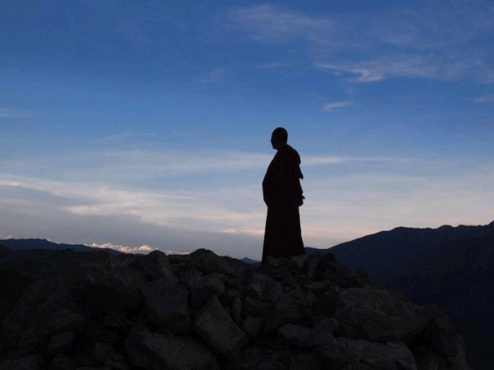

上师带领弟子们念诵意加持仪轨
上师：就在我们的头顶上加持我们，让我们生起什么样的正知正见了，这里面有四个重要的部分称为四正知！第一“因果真实不虚”，我们怎么来知道因果真实不虚的呢？对你的行住坐卧你去观察，从中间你去找啊，过去你没有观察现在你要观察。第二“轮回过患无穷”，我们通过对因果的真实不虚来观察发现，因果的不断延续它就是轮回……(部分录音遗失)
上师带领弟子们念诵四正知仪轨
上师：我们要慢慢地去思维、思维，反复地思维，反复地念诵。念诵它的时候，我们第一不断地去思维它的含义，第二要不断地去体会众生的痛苦，轮回的痛苦。后面呢我们讲皈依。后面就是皈依啦。这皈依呢，我们现在都知道有显部的，我们有显宗和密宗两部分，那么大家知不知道什么是显，什么是密？显，经教闻思为显，实践的窍诀为密，从因修持至果为显，以果地之慧和方便为行者顿超回归为密，它称为果乘。无论是任何法门当成就之时都已站在了果地。那也就是说什么呢？净土也是从显入密，而最终获得成就。禅宗也是由显入密，天台宗还是由显入密，律宗也还是由显入密，没有一个不是这样的。只是现在的很多人不能明白。现在你们知道了是你们的缘分。 它还是在因果当中，因乘和果乘，那么这里面导致了什么呢？导致了成就的速度，就是你成佛的速度。下面说什么呢？皈依，共同外皈依和不共内皈依。在显部的时候呢，我们学习的那个皈依就是共同外皈依，要想获得甚深法要能够圆满得到上师的功德来真正对治你的烦恼。当你通达一切法我，了知诸佛之心要，极密的，根本，等等等等……这一切其实都包括在皈依里。“诸佛正法贤圣三宝尊，从今直至菩提永皈依”这句话什么意思知道不知道？不是我念三句话，我皈依上师、皈依佛、皈依法、皈依僧我就皈依了，我就得到皈依了？不一定哦。那个十地菩萨他还在修皈依，他还在学皈依。你们认为你们已经皈依了吗？那十地菩萨还在学皈依。为什么？他还没成佛。从这里讲，这个皈依文你们就知道了。直至菩提我永皈依，就是直到成佛我永远皈依，共同外皈依、不共内皈依。不共内皈依就是你真正要想摆脱轮回的这种对治方法，是上师对你口传心授的窍诀，而这个部分的皈依，是不共的。那就是你不是我的弟子，我不会告诉你的，我也不能告诉你。为什么呢？你连前面最基本的内容都还不知道，告诉你你要是去谤佛、谤法。那怎么办？那诸佛菩萨是慈悲的，他要告诉你方法，他对众生的慈悲是一样的，通达法我。那这里面皈依是什么呢？是一切成就的宝藏，对一个行者来说在依止前应该对上师进行观察，你观察过以后，通过对他的功德进行观察了以后，真正依止来修持。依靠他修持，那他是谁呢？刚才讲了，上师是佛法僧三宝。“我们原来有个师父啊，那个师父是什么什么样的和尚。我们那个是什么什么大和尚。”但如果你以上的内容一天没听到，你就是在瞎闹，真的，真的是这样。你一天没听到，你一天都在瞎忙活，不知道在干什么糊里糊涂的事。但是永远皈依，从因果的角度上来说，如果说你舍弃了，你也就不得成就了。你舍弃了三宝你也就舍弃了依靠，你也就没有办法。在分别念的状态下以不同对境重复、反复地皈依，其实际上就是在反复地舍弃。这麻烦的很哦，你在这儿听不到，是不是？你们在那地方都听不到哦。后面的窍诀早着呢，后面成就的窍诀很多呢。这个五加行修完要学车确，车确修完了修托嘎，成佛。可是你后面你到哪儿修去？我们这儿成就是什么？在这个法里，有很多成就的法。有极速成就往生法，我们昨天很多人反复说了，有急速成就的法，还有即身成就的虹光身法。就是用我这一世这一生，我要成就跟释迦牟尼佛和阿弥陀佛一模一样，当要离开这个世界的时候，往那儿一坐，虹化，化成光消失了，没有了，头发也没有了，指甲也没有了，什么都没有，牙齿什么都没有。修证差一点点的呢，会留下头发、指甲。再差一点呢，人缩小，这么大身体，吱，缩小，就这么大（上师做手势）。我们现在的修证有几种。一、即生成就，就是以此身修持，获得罗汉，独觉，菩萨，佛的果位；二、往生成就；三、中阴得救，就是他临终的时候他自己没有走掉，自己没有这种能力走掉，修得不好，依靠什么呢？依靠旁边的人，大成就者的救度，将其超度，中阴救度，就是得救了……
